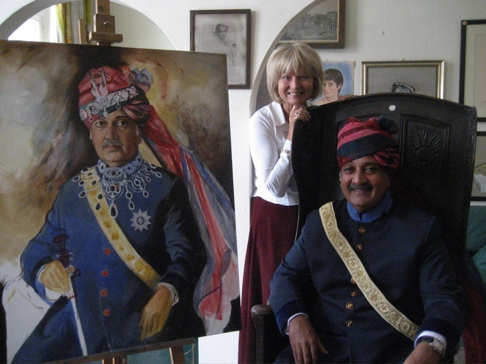

The Mahraja of Jodhpur
London, 8th January 2009.
It was amazing to journey India and admire its unquestionable beauty, guided by the connoisseur of it its art and creative energy.
One day, we dined with the Maharaja of Jaipur. Another day, the Maharaja of Jodhpur was a host to our party at his palace Umaid Bhawan. Magnificent. We stayed at the palace, which also functions as a fabulous hotel. Built at the beginning of the 20. century - with 347 rooms! His Royal Highness took us to a hall, where all his ancestors - the previous line of the Maharajas - were painted and displayed in a portrait gallery. So much history in one place. His own portrait was missing, however - and everyone said that it must be added, as well. Luckily, I had a little card, with the portrait of the Queen Mother in my purse. He expressed his wish to be portrayed by me and said he will write to me. As usual, I felt as if following in the foot-steps of someone great, who was here before me -the frescoes in the Umaid Bhawan Palace were painted by a Polish artist Stefan Norblin. In 1994, Lech Walesa - the Polish President and Noble Prize Winner, whom I had once painted, visited the place and met with the Maharaja. Following this visit, the frescoes were restored by the Embassy of Poland in India.
It wasn't long - following my return to London - I have received a letter from His Royal Highness. Soon after, the Maharaja of Jodhpur has arrived at my studio in London in September. He was accompanied by his personal secretary, who carried in a big cast - with the costume, the turban, the golden sash - the emblems of His Royalty. After all, the Maharaja was crowned when he was four! His Royal Highness kindly requested: - Would you kindly please paint me with my jewels that are on the photograph? I learnt that the jewels are no longer in his possession, as everything was taken from him during the political turn over of Indira Gandhi. The Maharaja's tax was 97%. His Palace was turned into a hotel. His Highness was a very serious sitter. Incredibly serious. He really posed. He put his soul into it. He sat with a great distinction. 5 days in a row, 11 a.m. - 2 p.m. with a break for lunch. He helped me to paint him, because he was sitting so great. Also, it was easy to paint his face, as it was classic and noble. He said the painting will be placed in the Royal Hall, as well as printed and celebrated in Jodhpur.